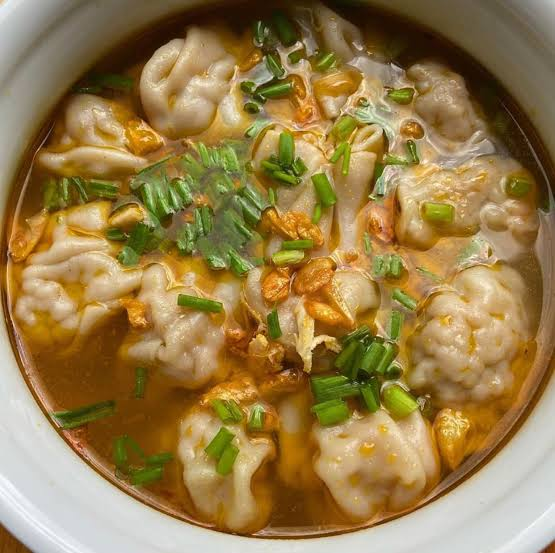

|
|
Pancit Molo

A delicious dumpling soup from Iloilo. Pancit Molo (also Molo Soup or Molo Balls Soup) or Filipino pork dumpling soup, is a type of soup made using wonton wrappers which originated from Molo district in Iloilo City, Philippines. It consists of a mixture of ground pork wrapped in molo or wonton wrapper, shredded chicken meat, and shrimp.
The soup is often ladled into serving bowls, and garnished with green onions and fried garlic bits for another layer of flavor. Pancit, which loosely translates to "noodle" is a common cuisine in the Philippines.
The "noodle" acting in this dish comes from the wonton wrappers added to this dish, which draws from Chinese cuisine. Under this influence, the wontons within the soup have been compared to "siomai dumplings."
INGRIDIENTS
1. Ground pork – Regular ground pork, not the leanest pack. A little fat keeps the filling tender after simmering.
2. Shrimp – Peeled, deveined, and chopped very fine so it blends into the pork. I usually keep frozen shrimp from Walmart or Costco in the freezer, and it works here once thawed and patted dry.
3. Wonton wrappers – The square ones from the refrigerated section of an Asian store. Keep the stack covered with a damp towel while you wrap so the edges do not dry out.
4. Yellow onion – Minced small. Large pieces stay crunchy inside the wonton.
5. Garlic powder – Seasons the pork and shrimp filling.
6. Sesame oil – Half a teaspoon is enough. It is a strong oil, and more than that takes over the filling.
7. Egg – Holds the filling together.
8. Salt – Used to season the pork and shrimp filling. Season the broth separately with fish sauce.
9. Ground black pepper – Just a little in the filling. You can add more at the table if you like it peppery.
For the Soup
10. Rotisserie chicken – Half a bird, with the bones. The bones go into the pot first and the meat gets shredded after.
11. Chicken broth – Six cups, or one 48-ounce carton. Chicken stock also works. If you only have water, add chicken bouillon to make up for it.
12. Water – Regular drinking water is fine. The broth and the chicken carry the flavor.
13. Scallions – Chop them last so the green stays bright, and set half aside for the top.
14. Toasted garlic – A quarter cup for topping. Store-bought fried garlic works, but homemade tastes better.
15. Fish sauce – Two to three tablespoons, added at the end after tasting.
INSTRUCTIONS
1. There are 2 parts in making this dish. Let's start by making the dumplings. Combine pork, egg (dissolve 1 Knorr Shrimp Broth Cube in beaten egg), cornstarch and singkamas into a bowl. mix until all ingredients are well incorporated.
2. Wrap a teaspoon of mixture into the molo wrapper and seal by brushing the edges with water.
3. Next, we start making the broth. Get a pan and make it nice and hot over medium heat. Pour some oil and sauté onion and garlic.
4. Add water and the remaining Knorr Shrimp Broth Cube and just bring this to a boil. Mix until the cube is dissolved. Lower the heat then drop in the molo dumplings and simmer for 2 minutes.
5. Add strips of molo wrappers and adjust according to taste. After simmering for another minute, this dish is done. Serve with a sprinkle of spring onions and fried garlic on top.
6. Pancit Molo will remind you of home. Comforting, filling and will definitely warm your belly. |